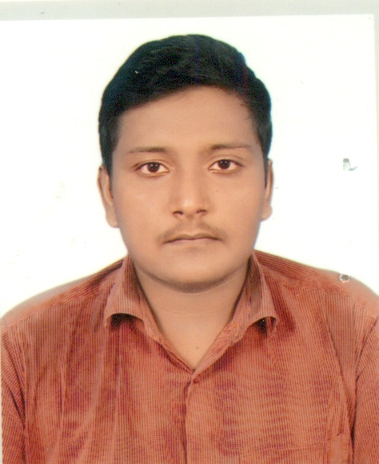

Mobile No:01908462119 E-mail: dsujoy209@gmail.com
I want to see myself working in an environment of growth and excellence and earn a job which provides me job satisfaction and self-development and help me achieve personal as well as organization goals.
Degree: B.S.C in Computer Science and Engineering
Session: 2019-2020
Institute: American International University-Bangladesh
Result: Appearing
Degree: HSC
Session: 2018
Institute: Brahmondi KKM Government High School
Result: 4.94
Degree: SSC
Session: 2016
Institute: Narsingdhi Science College
Result: 4.75